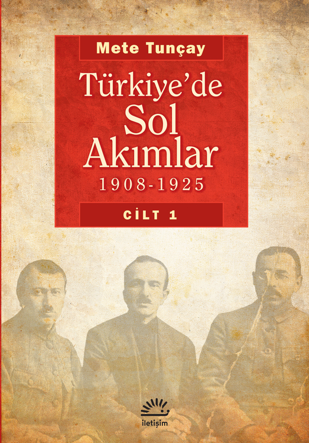
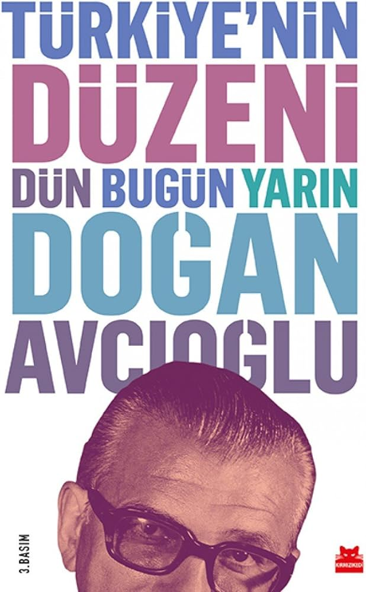

Faz 1: Sistemi Kurmak, Sömürü ve Edebi Yansıma

The Wealth of Nations (Books I-III)
Türkçe Adı: Ulusların Zenginliği (1. Cilt)Neden Burada? Kapitalizmin, serbest piyasanın ve işbölümünün temel metni. Marx'ın itiraz edeceği ekonomik sistemi kuran kısımdır.

The Wealth of Nations (Books IV-V)
Türkçe Adı: Ulusların Zenginliği (2. Cilt)Neden Burada? Devletin ekonomideki rolünü (eğitim, kamu altyapısı) ve dönemin tekel eleştirisini ekler. Kapitalist devletin orijinalde nasıl tasarlandığını gösterir.

Caliban and the Witch
Türkçe Adı: Caliban ve CadıNeden Burada? Kapitalizmin ilk aşamasında kadın emeğine ve bedenine nasıl el konulduğunu anlatarak "yeniden üretim" perspektifini tamamlar.

The ABC of Socialism
Türkçe Adı: Sosyalizmin AlfabesiNeden Burada? Marksist ekonomi politiğin dünyadaki en anlaşılır giriş kitabıdır. Kavramları netleştirir.

Wage Labour and Capital
Orijinal Adı: Lohnarbeit und KapitalNeden Burada? Marx'ın, "sömürü" kavramının ekonomik temelini Kapital okumadan anlatma biçimidir.

Germinal
Türkçe Adı: GerminalNeden Burada? Marx'ın anlattığı sömürü kavramının edebiyattaki en büyük karşılığı. Maden işçilerinin sefaletini ve direnişini hissettirir.

The Communist Manifesto
Orijinal Adı: Manifest der Kommunistischen ParteiNeden Burada? Sınıf mücadelesinin ve komünist hedeflerin siyasi deklarasyonu.

Imperialism
Türkçe Adı: Emperyalizm, Kapitalizmin En Yüksek AşamasıNeden Burada? Serbest rekabetin nasıl bitip dev tekellere dönüştüğünü gösterir. I. Dünya Savaşı'nın Marksist açıklamasıdır.

The Iron Heel
Türkçe Adı: Demir ÖkçeNeden Burada? Tekelci kapitalizmin siyasi olarak faşist bir oligarşiye dönüşmesini öngören muazzam bir distopik kurgudur.
Faz 2: Devrim ve Devletin Dönüşümü

The State and Revolution
Türkçe Adı: Devlet ve DevrimNeden Burada? Burjuva devletin neden parçalanıp yerine ne konması gerektiğini ve devletin sönümlenmesini tartışır.

On Practice and Contradiction
Türkçe Adı: Pratik ve Çelişki ÜzerineNeden Burada? Marksizm-Leninizm'in Batı'dan çıkıp köylü toplumuna nasıl uyarlandığını gösteren felsefi temeldir.
Faz 3: Türkiye Özelinde Sol ve Toplumsal Yapı

Türkiye'de Sol Akımlar (1908-1925)
Orijinal Dil: TürkçeNeden Burada? Türkiye'de solun köklerini, ilk komünist örgütlenmeleri nesnel bir tarihçiden öğrenmek için.

Türkiye'nin Düzeni
Orijinal Dil: TürkçeNeden Burada? Türkiye'nin neden Batı gibi gelişemediğini anlatan 1960'lar solunun ülkeyi okuma biçimidir.

Türkiye İktisat Tarihi
Orijinal Dil: TürkçeNeden Burada? Türkiye'nin sermaye birikimini ve sınıf yapılarını katıksız bir Marksist iktisat penceresinden anlatan ana kaynaktır.

Türkiye ve Sosyalizm Sorunları
Orijinal Dil: TürkçeNeden Burada? Türkiye'nin koşullarında bilimsel sosyalizmin nasıl örgütlenmesi gerektiğine dair yetkin metindir.
Faz 4: Hegemonya, Geç Kapitalizm ve Çıkışsızlık

Selections from the Prison Notebooks
Türkçe Adı: Hapishane DefterleriNeden Burada? Kapitalizmin sadece orduyla değil, okullar ve medya ile rıza ("Hegemonya") ürettiğini açıklar.

Listen, Little Man!
Türkçe Adı: Dinle Küçük AdamNeden Burada? Sıradan insanın neden kendisini ezen otoriteye aşık olduğunu açıklar. Hegemonyanın psikolojik yüzüdür.

A Brief History of Neoliberalism
Türkçe Adı: Neoliberalizmin Kısa TarihiNeden Burada? Kapitalizmin 1980'lerden itibaren devleti ve toplumu nasıl yeniden dizayn ettiğini anlatır.

Capitalist Realism: Is There No Alternative?
Türkçe Adı: Kapitalist GerçekçilikNeden Burada? Sistemin çöküşünü hayal etmenin kapitalizmin sonunu hayal etmekten neden daha kolay olduğunu sorgular.

Postcapitalist Desire
Türkçe Adı: Postkapitalist ArzuNeden Burada? Yeni bir sol tahayyülün ve post-kapitalist bir geleceğin nasıl inşa edilebileceğini arar.